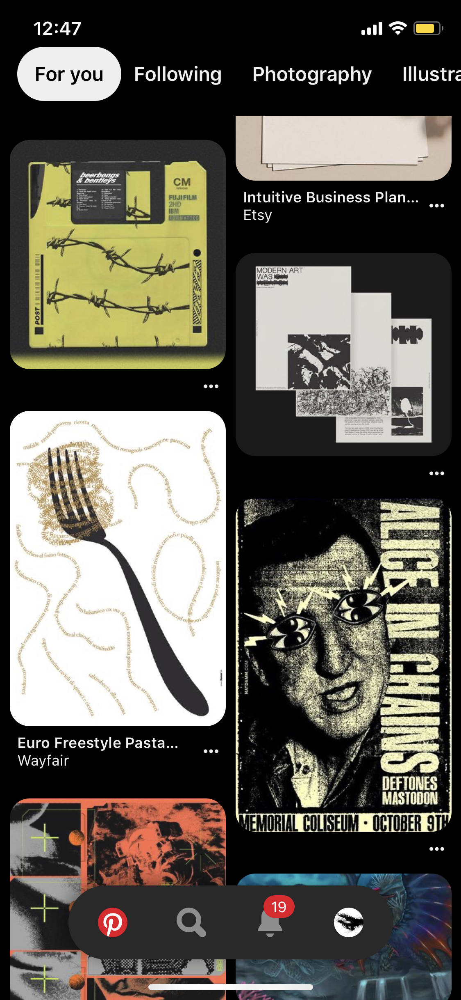
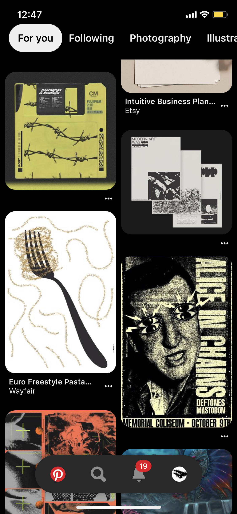

a timeline of ernest
charles strauhal

 

TODAY
I have these periods of time where I stop using twitter for years on end, but I'm on a twitter binge at the moment
If you use Pinterest enough, it'll actually start putting good content on your home feed
*crazy right!??*


At the moment, the only website I really frequent is Twitter, a website which is now 13 years old. Since I'm so bogged down with schoolwork right now, I occasionally tend to search for ideas on Pinterest or Behance, but it seems for the first time that the internet has finally taken a backseat in my life.